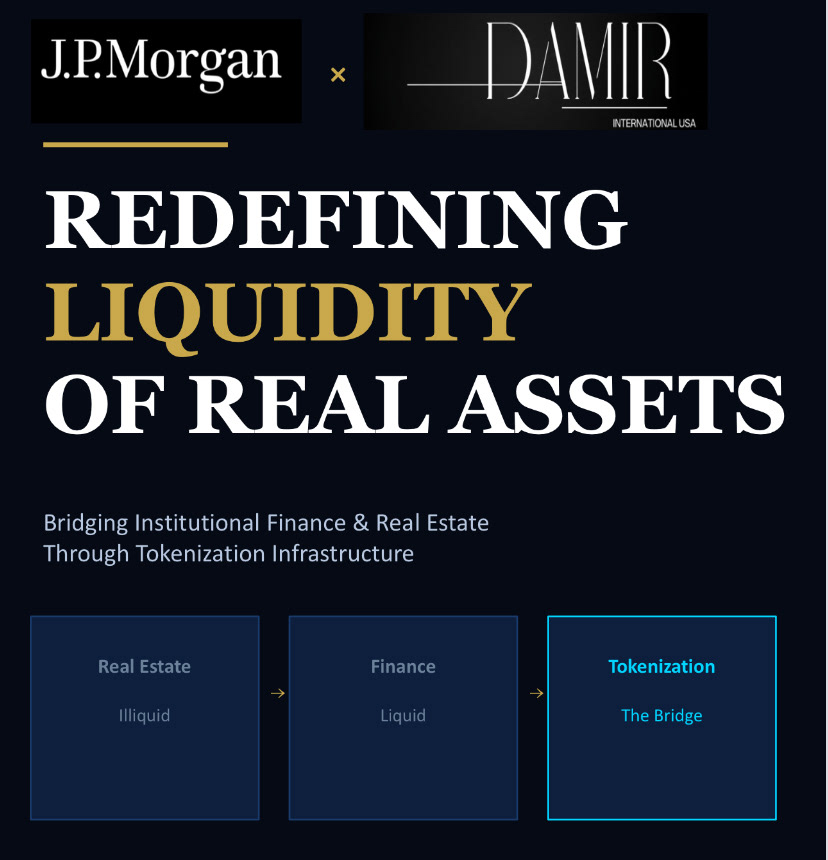

ONYX Project
2026Where legacy finance meets tokenized markets
Project Onyx is a brand and visual-direction exploration for a legacy financial institution entering tokenized real-world assets. The moodboard bridges two eras: the marble-and-top-hat gravitas of 19th-century banking, and the glass, light, and network imagery of real-time digital markets. A navy and gold palette, paired with serif headlines and clean sans-serif body type, sets a tone that reads as continuity rather than disruption — precision and scale, built on inherited trust.
Audience — Institutional stakeholders evaluating digital-asset infrastructure.
Objective — A visual language that pairs 150 years of banking gravitas with real-time market velocity.
Mood — Nocturnal, architectural, precise trust rendered in glass, steel and gold light.
Client : JP Morgan
